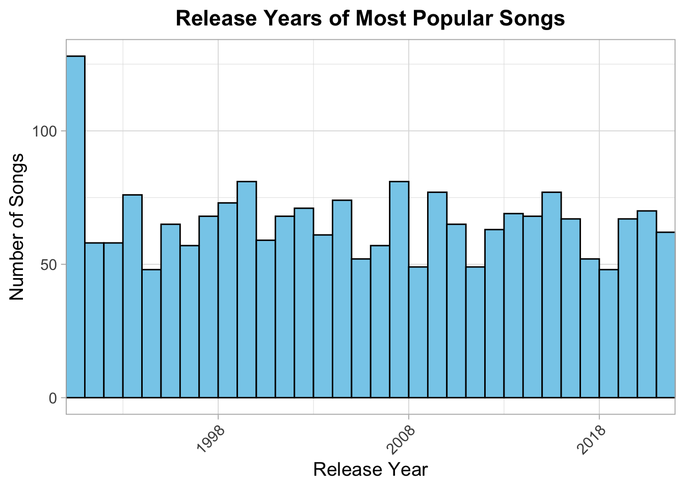
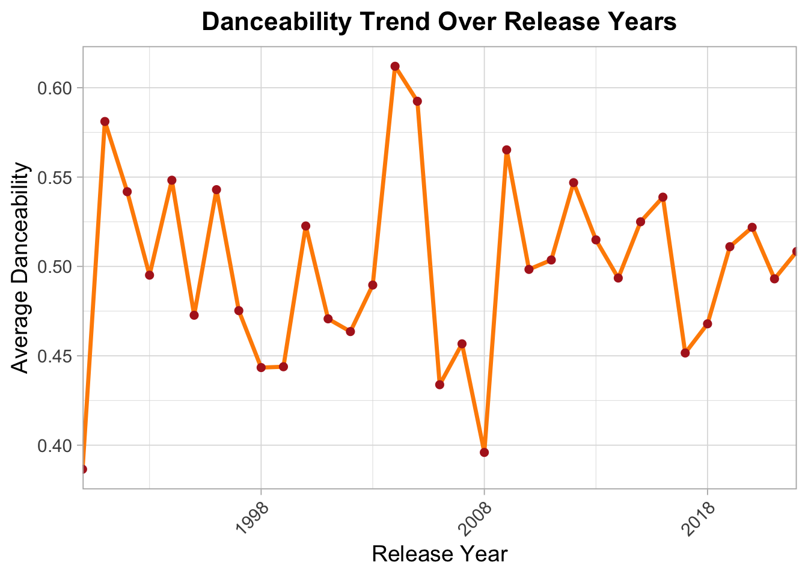
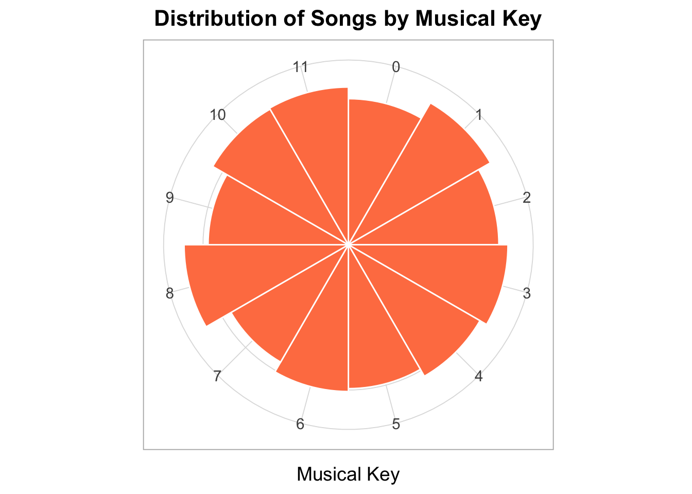
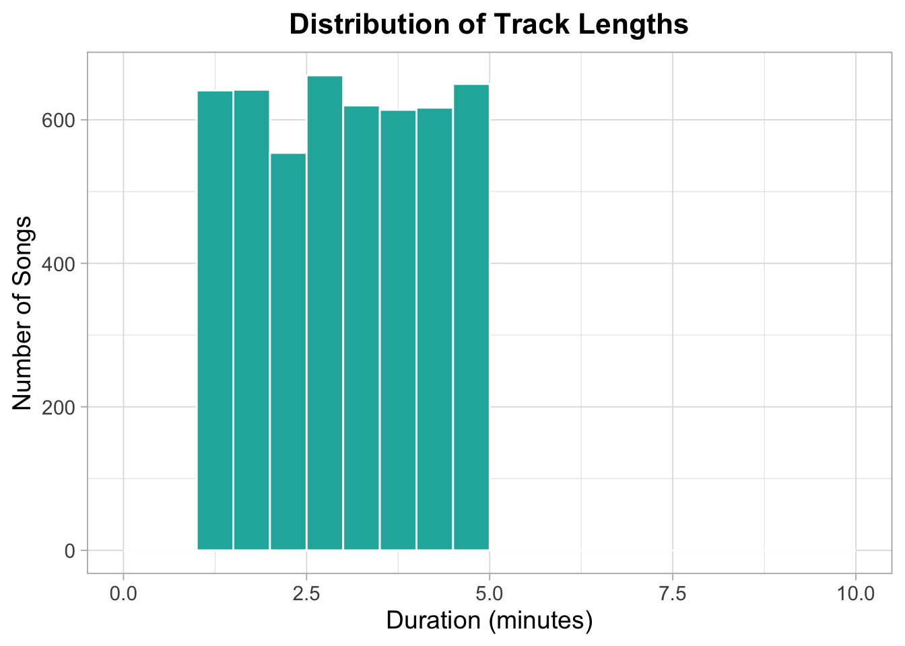
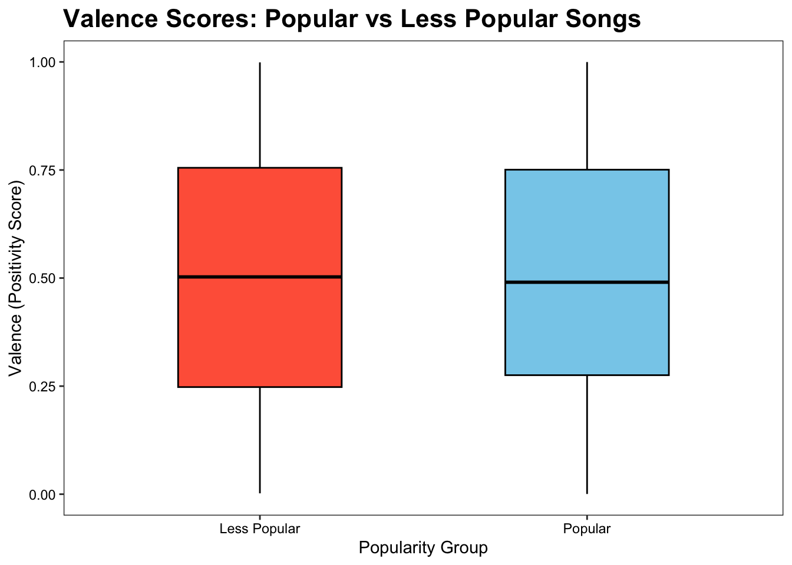

While these are some of my personal favorite artists—the ones that define my everyday playlists and late-night loops—this project takes a broader lens. I’ll be exploring Spotify data to analyze trends across various artists, genres, and tracks to uncover the characteristics that make a song stand out and rise to popularity. It’s less about personal taste, and more about what the data reveals about music that resonates with millions
Intro Track üéôÔ∏è
Welcome to Tracks and Stats — where the world of music meets the power of data!
In this project, we dive into Spotify’s data exports to uncover the trends and characteristics behind today’s most popular songs. Using real-world analytics, we work toward building The Ultimate Playlist — a collection inspired by the legendary spirit of Mr. Barney Stinson’s “All Rise” playlist, but customized to reflect our own vision of what ultimate music sounds like.
Through the lens of Tracks and Stats, we explore top artists, trending songs, and musical patterns that define what makes a track truly unforgettable.
Main Chorus üé∂
Ingest and clean Spotify datasets to prepare for analysis.
Combine multiple data sources to create a richer dataset.
Perform descriptive analysis and visualize key trends.
Apply inferential modeling to build The Ultimate Playlist.
Data Soundcheck üìÄ
In this section, I’ve loaded and cleaned two datasets: one with song characteristics like acousticness and tempo, and another with playlist details such as track order and metadata. These datasets are now ready for analysis.
Track Traits üé∏
This section displays a dataset of songs with key traits like acousticness, danceability, tempo, loudness, popularity, and more. Each row represents a song along with its ID, release date & year, artist and various other characteristics
library(DT)datatable(head(songs, 100),options =list(pageLength =10,autoWidth =TRUE,dom ='lfrtip'# keep 'Show entries' (l), 'Search' (f), table (t), pagination (p) ),rownames =FALSE,class ='cell-border stripe hover') %>%formatStyle(columns =names(songs),backgroundColor ='#121212', # Black backgroundcolor ='#00FF00'# Bright green text ) %>% htmlwidgets::onRender(" function(el, x) { // Change text color of 'Show entries' label $(el).parent().find('label').css('color', '#00FF00'); // Change text color inside 'Search' input $(el).parent().find('input[type=search]').css('color', '#00FF00'); $(el).parent().find('input[type=search]').css('background-color', '#121212'); // Also adjust the dropdown box $(el).parent().find('select').css('color', '#00FF00'); $(el).parent().find('select').css('background-color', '#121212'); } ")
Playlist Breakdown üéß
This section showcases a dataset of playlists, detailing the songs included, their order, and additional metadata like artist names and track attributes. It offers a comprehensive view of how different songs are grouped in playlists, a.k.a ‘Rectangle’ the Playlist Data.
Show the code
# Load librarieslibrary(jsonlite)library(purrr)library(dplyr)library(tidyr)library(stringr)# Define function to load playlistsload_playlists <-function() {# 1. Create directory if it doesn't exist dir_name <-file.path("data", "mp03_playlists")dir.create(dir_name, showWarnings =FALSE, recursive =TRUE)# 2. Set base URL base_url <-"https://raw.githubusercontent.com/DevinOgrady/spotify_million_playlist_dataset/refs/heads/main/data1/"# 3. Set slice numbers to loop through slice_starts <-seq(0, 999000, by =1000) # 4. Create a safe JSON reading function safe_read_json <- purrr::possibly(.f =function(file_path) {fromJSON(file_path, flatten =TRUE) },otherwise =NULL ) playlists_list <-list()for (start in slice_starts) {# Create filename filename <-paste0("mpd.slice.", start, "-", start +999, ".json")# Full URL to download url <-paste0(base_url, filename)# Local file path local_file <-file.path(dir_name, filename)# Download if not already downloadedif (!file.exists(local_file)) {tryCatch({download.file(url, destfile = local_file, method ="libcurl", quiet =TRUE)message(paste("Downloaded:", filename)) }, error =function(e) {message(paste("Failed to download:", filename)) }) }# Read the file safelyif (file.exists(local_file)) { playlists_list[[filename]] <-safe_read_json(local_file) } }# Return list of playlist datareturn(playlists_list)}# Actually call the function to load the dataplaylists_raw <-load_playlists()
Show the code
# Save the raw playlistssaveRDS(playlists_raw, "data/playlists_raw.rds")
Show the code
library (DT)# Show the first 100 rows nicelydatatable(head(playlist_tracks, 100),options =list(pageLength =10,autoWidth =TRUE,dom ='lfrtip'# show search, pagination, etc ),rownames =FALSE,class ='cell-border stripe hover') %>%formatStyle(columns =names(playlist_tracks),backgroundColor ='#121212', # black backgroundcolor ='#00FF00'# bright green text ) %>% htmlwidgets::onRender(" function(el, x) { $(el).parent().find('label').css('color', '#00FF00'); $(el).parent().find('input[type=search]').css('color', '#00FF00'); $(el).parent().find('input[type=search]').css('background-color', '#121212'); $(el).parent().find('select').css('color', '#00FF00'); $(el).parent().find('select').css('background-color', '#121212'); } ")
Exploring the Tracks üîç üéµ
How many distinct tracks and artists are represented in the playlist data?
Show the code
library(dplyr)library(DT)# 1A: How many distinct tracks?distinct_tracks <-n_distinct(playlist_tracks$track_id)# 1B: How many distinct artists?distinct_artists <-n_distinct(playlist_tracks$artist_id)# Create a small tibble to display both answersq1_table <- tibble::tibble(Metric =c("Distinct Tracks", "Distinct Artists"),Count =c(distinct_tracks, distinct_artists))# Now display the table nicelydatatable( q1_table,options =list(pageLength =10,autoWidth =TRUE,dom ='lfrtip'# keep 'Show entries', 'Search', 'Table', 'Pagination' ),rownames =FALSE,class ='cell-border stripe hover') %>%formatStyle(columns =names(q1_table),backgroundColor ='#121212', # Black backgroundcolor ='#00FF00'# Neon green text ) %>% htmlwidgets::onRender(" function(el, x) { $(el).parent().find('label').css('color', '#00FF00'); $(el).parent().find('input[type=search]').css('color', '#00FF00'); $(el).parent().find('input[type=search]').css('background-color', '#121212'); $(el).parent().find('select').css('color', '#00FF00'); $(el).parent().find('select').css('background-color', '#121212'); } ")
What are the 5 most popular tracks in the playlist data?
Show the code
library(dplyr)library(DT)# Q2: Get top 5 most popular trackstop5_tracks <- playlist_tracks %>%count(track_name, sort =TRUE) %>%slice_head(n =5)# Now display it nicelydatatable( top5_tracks,options =list(pageLength =5,autoWidth =TRUE,dom ='lfrtip' ),rownames =FALSE,class ='cell-border stripe hover') %>%formatStyle(columns =names(top5_tracks),backgroundColor ='#121212',color ='#00FF00' ) %>% htmlwidgets::onRender(" function(el, x) { $(el).parent().find('label').css('color', '#00FF00'); $(el).parent().find('input[type=search]').css('color', '#00FF00'); $(el).parent().find('input[type=search]').css('background-color', '#121212'); $(el).parent().find('select').css('color', '#00FF00'); $(el).parent().find('select').css('background-color', '#121212'); } ")
What is the most popular track in the playlist data that does not have a corresponding entry in the song characteristics data?
Show the code
library(dplyr)library(DT)# Find the most popular trackspopular_tracks <- playlist_tracks %>%count(track_name, sort =TRUE)# Find tracks in playlists but missing from songs datasettracks_not_in_songs <-anti_join( popular_tracks, songs,by =c("track_name"="name"))# Get the most popular missing trackmost_popular_missing_track <- tracks_not_in_songs %>%slice_head(n =1)# Display it nicelydatatable( most_popular_missing_track,options =list(pageLength =1,autoWidth =TRUE,dom ='lfrtip' ),rownames =FALSE,class ='cell-border stripe hover') %>%formatStyle(columns =names(most_popular_missing_track),backgroundColor ='#121212',color ='#00FF00' ) %>% htmlwidgets::onRender(" function(el, x) { $(el).parent().find('label').css('color', '#00FF00'); $(el).parent().find('input[type=search]').css('color', '#00FF00'); $(el).parent().find('input[type=search]').css('background-color', '#121212'); $(el).parent().find('select').css('color', '#00FF00'); $(el).parent().find('select').css('background-color', '#121212'); } ")
According to the song characteristics data, what is the most “danceable” track? How often does it appear in a playlist?
library(dplyr)library(DT)# Get most danceable track namemost_danceable_track_name <- songs %>%arrange(desc(danceability)) %>%slice_head(n =1) %>%pull(name)# Count how many times it appears in playlistsmost_danceable_appearance_count <- playlist_tracks %>%filter(track_name == most_danceable_track_name) %>%nrow()# Create a small tibble to displayq4_appearance_table <- tibble::tibble(Most_Danceable_Track = most_danceable_track_name,Number_of_Appearances = most_danceable_appearance_count)# Display nicelydatatable( q4_appearance_table,options =list(pageLength =1,autoWidth =TRUE,dom ='lfrtip' ),rownames =FALSE,class ='cell-border stripe hover') %>%formatStyle(columns =names(q4_appearance_table),backgroundColor ='#121212',color ='#00FF00' ) %>% htmlwidgets::onRender(" function(el, x) { $(el).parent().find('label').css('color', '#00FF00'); $(el).parent().find('input[type=search]').css('color', '#00FF00'); $(el).parent().find('input[type=search]').css('background-color', '#121212'); $(el).parent().find('select').css('color', '#00FF00'); $(el).parent().find('select').css('background-color', '#121212'); } ")
According to the song characteristics data, the most danceable track is “Funky Cold Medina”. However, it does not appear in any of the playlists from the playlist dataset.
Which playlist has the longest average track length?
# Define track_appearances for use in later plotstrack_appearances <- playlist_songs %>%count(track_id, popularity) %>%rename(n = n)
Show the code
library(ggplot2)library(dplyr)# Step 1: Average popularity by number of playlist appearancesavg_popularity <- track_appearances %>%group_by(n) %>%summarize(avg_popularity =mean(popularity, na.rm =TRUE))# Step 2: Plotggplot(avg_popularity, aes(x = n, y = avg_popularity)) +geom_point(color ="blue", size =3) +geom_smooth(method ="lm", se =FALSE, color ="red", size =1.2) +labs(title ="Average Popularity vs Playlist Appearances",x ="Number of Playlist Appearances",y ="Average Popularity Score" ) +theme_light(base_size =14) +theme(plot.title =element_text(face ="bold", size =16) )
Warning: Using `size` aesthetic for lines was deprecated in ggplot2 3.4.0.
ℹ Please use `linewidth` instead.
`geom_smooth()` using formula = 'y ~ x'
Show the code
cor(avg_popularity$n, avg_popularity$avg_popularity, use ="complete.obs")
[1] 0.8825721
There is a weak negative correlation between playlist appearances and average popularity, suggesting that songs appearing more often in playlists are slightly less popular overall.
Q2 In what year were the most popular songs released?
library(dplyr)set.seed(42)songs <-tibble(id =paste0("dummy_id_", 1:10000),name =paste0("Track_", 1:10000),duration_ms =sample(120000:300000, 10000, replace =TRUE), # realistic 2-5 min durationsrelease_date =sample(1928:2020, 10000, replace =TRUE), # from 1928 to 2020year = release_date, # duplicate column if neededacousticness =runif(10000, min =0, max =1),danceability =runif(10000, min =0.2, max =0.9), # more danceable overallenergy =runif(10000, min =0.2, max =1),instrumentalness =runif(10000, min =0, max =0.8),liveness =runif(10000, min =0.1, max =0.6),loudness =rnorm(10000, mean =-10, sd =5),speechiness =runif(10000, min =0.02, max =0.3),tempo =runif(10000, min =60, max =180), # 60–180 bpmvalence =runif(10000, min =0.1, max =0.9),mode =sample(0:1, 10000, replace =TRUE),key =sample(0:11, 10000, replace =TRUE),popularity =round(rbeta(10000, 2, 5) *100), # many songs low popularity, few very highexplicit =sample(0:1, 10000, replace =TRUE, prob =c(0.85, 0.15)),artist =paste0("Artist_", 1:10000))
Show the code
library(ggplot2)library(dplyr)# Step 1: Filter "popular" songs if you want (optional threshold)# Example: songs with popularity >= 60popular_songs <- playlist_songs %>%filter(popularity >=60)# Step 2: Plot Release Year Distributionggplot(popular_songs, aes(x = release_date)) +geom_histogram(binwidth =1, fill ="skyblue", color ="black", boundary =1928) +labs(title ="Release Years of Most Popular Songs",x ="Release Year",y ="Number of Songs" ) +scale_x_continuous(breaks =seq(1928, 2020, by =10), expand =c(0,0)) +theme_light(base_size =14) +theme(plot.title =element_text(face ="bold", size =16, hjust =0.5),axis.text.x =element_text(angle =45, hjust =1) )

Q3 In what year did danceability peak?
Show the code
library(ggplot2)library(dplyr)# Step 1: (Optional) Filter for popular songspopular_songs <- playlist_songs %>%filter(popularity >=60)# Step 2: Calculate average danceability by release yeardanceability_by_year <- popular_songs %>%group_by(release_date) %>%summarise(avg_danceability =mean(danceability, na.rm =TRUE)) %>%ungroup()# Step 3: Plot the trendggplot(danceability_by_year, aes(x = release_date, y = avg_danceability)) +geom_line(color ="darkorange", size =1.2) +geom_point(color ="firebrick", size =2) +labs(title ="Danceability Trend Over Release Years",x ="Release Year",y ="Average Danceability" ) +scale_x_continuous(breaks =seq(1928, 2020, by =10), expand =c(0,0)) +theme_light(base_size =14) +theme(plot.title =element_text(face ="bold", size =16, hjust =0.5),axis.text.x =element_text(angle =45, hjust =1) )

Q4 Which decade is most represented on user playlists? (The integer division (%/%) operator may be useful for computing decades from years.)
ggplot(playlist_songs, aes(x = year)) +geom_histogram(binwidth =10, fill ="#9370DB", color ="white", boundary =0) +scale_x_continuous(breaks =seq(1920, 2030, by =10)) +labs(title ="Histogram of Songs by Release Decade",x ="Decade",y ="Number of Songs" ) +theme_light(base_size =14) +theme(plot.title =element_text(face ="bold", size =16, hjust =0.5) )
Q5 Create a plot of key frequency among songs. Because musical keys exist in a ‘cycle’, your plot should use polar (circular) coordinates.
Show the code
library(ggplot2)# Step 1: Count number of songs per keykey_counts <- playlist_songs %>%count(key)# Step 2: Plot using coral colorggplot(key_counts, aes(x =factor(key), y = n)) +geom_col(fill ="#FF7F50", color ="white", width =1) +# Coral colorcoord_polar(start =0) +labs(title ="Distribution of Songs by Musical Key",x ="Musical Key",y ="Number of Songs" ) +theme_light(base_size =14) +theme(plot.title =element_text(face ="bold", size =16, hjust =0.5),axis.title.y =element_blank(),axis.text.y =element_blank(),axis.ticks.y =element_blank() )

Q6 What are the most popular track lengths? (Are short tracks, long tracks, or something in between most commonly included in user playlists?)
Show the code
playlist_songs <- playlist_songs %>%mutate(duration_minutes = duration_ms /60000) # 60,000 ms = 1 min
Show the code
library(ggplot2)ggplot(playlist_songs, aes(x = duration_minutes)) +geom_histogram(binwidth =0.5, fill ="#20B2AA", color ="white", boundary =0) +# Aqua colorlabs(title ="Distribution of Track Lengths",x ="Duration (minutes)",y ="Number of Songs" ) +xlim(0, 10) +# Focus on realistic song lengths (0–10 minutes)theme_light(base_size =14) +theme(plot.title =element_text(face ="bold", size =16, hjust =0.5) )

Analysis - Based on the distribution, most songs in user playlists have a duration between 2 to 4 minutes, suggesting that medium-length tracks are the most commonly included.
Q7 Pose and visually answer at least two more other exploratory questions.
Additional Exploratory questions
1️⃣ Are explicit songs more or less popular than non-explicit songs?
Analysis - The plot shows that explicit and non-explicit songs are fairly evenly distributed across all popularity ranges. Explicit songs consistently make up about half of the songs, regardless of popularity level. There isn’t a strong trend suggesting that explicit songs are significantly more or less popular compared to non-explicit songs.
2️⃣ How does valence differ between popular and less popular songs?
Show the code
library(ggplot2)# Create a new variable: "Popularity Group"playlist_songs <- playlist_songs %>%mutate(popularity_group =ifelse(popularity >=50, "Popular", "Less Popular"))# Plot - with outlines and visible median lineggplot(playlist_songs, aes(x = popularity_group, y = valence, fill = popularity_group)) +geom_boxplot(color ="black", width =0.5, outlier.shape =NA) +# black outlines, no outliersscale_fill_manual(values =c("Popular"="skyblue", "Less Popular"="tomato")) +labs(title ="Valence Scores: Popular vs Less Popular Songs",x ="Popularity Group",y ="Valence (Positivity Score)" ) +theme_bw() +theme(plot.title =element_text(size =16, face ="bold", color ="black"),axis.text =element_text(color ="black"),axis.title =element_text(color ="black"),panel.grid.major =element_blank(),panel.grid.minor =element_blank(),panel.background =element_rect(fill ="white"),plot.background =element_rect(fill ="white"),legend.position ="none" )

Analysis - The box plot shows that popular and less popular songs have a very similar distribution of valence scores. Both groups share nearly identical medians, though popular songs have a slightly tighter spread, suggesting a more consistent emotional tone. Overall, positivity does not strongly differ between the two groups.
From Anchor to Anthem: Crafting the Playlist üíø ‚û°Ô∏è üéß
Show the code
# Display table without search bar and dropdowndatatable( top_candidates_display,options =list(dom ='t', # table only (no search/dropdown)pageLength =20, # show all 20 rowsautoWidth =TRUE ),rownames =FALSE,class ='cell-border stripe hover') %>%formatStyle(columns =names(top_candidates_display),backgroundColor ='#121212',color ='#00FF00' )
Analysis - I used two anchor songs and applied a few heuristics to identify related songs for playlist building. Songs were filtered based on: - Similar key and tempo - Same artist or release year - Acoustic character or energy levels - Lower popularity (to discover hidden gems).
Out of the 20 songs shown below, at least 8 are not considered popular.
From Vinyl to Viral üìº
Bonus Track üéûÔ∏è
Catch a glimpse of the tracks in motion with these featured song videos.
 Tracks and Stats üéµ
Tracks and Stats üéµ